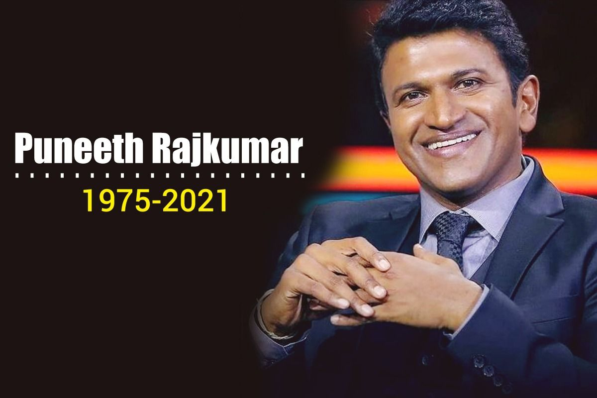

Puneeth Rajkumar

Puneeth Rajkumar (17 March 1975 – 29 October 2021), colloquially known as Appu, was an Indian actor, playback singer, television presenter, and producer who worked primarily in Kannada cinema. He was a lead actor in 29 films; as a child, he appeared in many films. His performances in Vasantha Geetha (1980), Bhagyavantha (1981), Chalisuva Modagalu (1982), Eradu Nakshatragalu (1983), Bhakta Prahaladha, Yarivanu and Bettada Hoovu (1985) were praised. He won the National Film Award for Best Child Artist for his role of Ramu in Bettada Hoovu.He also won Karnataka State Award Best Child artist for Chalisuva Modagalu and Eradu Nakshatragalu. Puneeth's first lead role was in 2002's Appu. Karnataka Government has announced State's highest civilian award Karnataka Ratna for Puneeth, posthumously, in November 2021.
He has been dubbed by media and fans as "Power Star". He appeared as a lead actor in commercially successful films, including Appu (2002), Abhi (2003), Veera Kannadiga (2004), Mourya (2004), Aakash (2005), Ajay (2006), Arasu (2007), Milana (2007), Vamshi (2008), Raam (2009), Jackie (2010), Hudugaru (2011), Raajakumara (2017), and Anjani Putra (2017). He was one of the most famous celebrities and the highest-paid actors in the Kannada cinema.In 2012, he debuted as a television presenter on the game show Kannadada Kotyadhipati, a Kannada version of Who Wants to Be a Millionaire?
Personal Life
Puneeth (born Lohith) was born in Chennai to the matinee idol Dr. Rajkumar and Parvathamma Rajkumar on 17 March 1975. He was their fifth and youngest child. When Puneeth was six years old, his family moved to Mysore. His father brought him and his sister Poornima to his film sets until he was ten years old. His elder brothers, Shiva Rajkumar and Raghavendra Rajkumar, are also professional actors.
Puneeth married Ashwini Revanth from Chikmagalur on 1 December 1999. They met through a common friend, and had two daughters Drithi and Vanditha.
Acting Career
1976–1989: As child actor
Director V. Somashekar cast Puneeth (then known as Lohith) onscreen when he was six months old in his thriller film Premada Kanike (1976), and Aarathi.[13] This was followed by Vijay's Sanaadi Appanna (1977), based on Krishnamoorthy Puranik's novel of the same name
2002–2007: Debut as lead and breakthrough
In April 2002, Puneeth made his film debut as a leading man in the film Appu with actress, Rakshita also making her film debut.[20] The musical by Gurukiran, directed by Puri Jagannadh and produced by Parvathamma Rajkumar, in which he played a college boy, was a box office success and critics praised his dancing skills. Puneeth sang "Taliban Alla Alla", with lyrics by Upendra and music by Gurukiran. The film's success spawned remakes in Telugu (Idiot (2002)) and Tamil (Dum (2003))
2008–2015: Other films
The actor released two films in 2008: D. Rajendra Babu's Bindaas and Prakash's Vamshi. Puneeth's first 2009 release was Raaj - The Showman. Although the film (directed by Prem) was criticised, his performance was praised.[28] His other film Raam, with Priyamani, was a remake of the Telugu hit Ready.[29]
Puneeth returned to the limelight in 2010 with back-to-back hits. The first was Jacob Varghese's political thriller Prithvi, in which he played a bureaucrat in Ballari district who fights corruption. His next release was the action film Jackie, directed by Duniya Soori,[30] which was a commercial success. In 2011, Puneeth co-starred in K. Madesh's Hudugaru, a remake of the Tamil film Nadodigal[31] in which he reprised M. Sasikumar's role in the original. For his performance, he received his second Filmfare and first SIIMA Best Actor awards.[32] In Yogaraj Bhat's travelogue Paramathma, Puneeth's next release, his character searches for love
In March 2016, Puneeth worked for M. Saravanan's Chakravyuha and Duniya Soori's Doddmane Hudga. In 2017, he appeared in Santhosh Ananddram 's Raajakumara, which broke all-records in box-office and became the highest-grossing Kannada-language film of all time beating previous record of Mungaru Male,[40][41] later the record was taken up by the movie K.G.F: Chapter 1. He also had the starring role in A Harsha's Anjani Putra alongside with Rashmika Mandanna, which was remake of Tamil film Poojai. Puneeth Rajkumar has played narrator role in the Anup Bhandari directed Rajaratha. In 2019 his film Natasaarvabhowma was released and also had commercial success
Other Works
Puneeth was involved in philanthropy with his mother at the Shakti Dhama ashram in Mysore,and owned the Bengaluru Royals, Premier Futsal team.
Death
On 29 October 2021, Puneeth died in Bangalore from cardiac arrest at the age of 46.[2][66] He donated his eyes in accordance with a pledge by his father Rajkumar, that he along with all his family members will donate their eyes after death.[67] The donation of his eyes has given eyesight to four different people.[68][69] His state funeral was attended by the Chief Minister of Karnataka and other leaders.[70] His body was kept for public view at Kanteerava stadium for 3 days, and was reportedly attended by more than 10 lakh people.He was buried at Sree Kanteerava Studios in Bangalore
Home